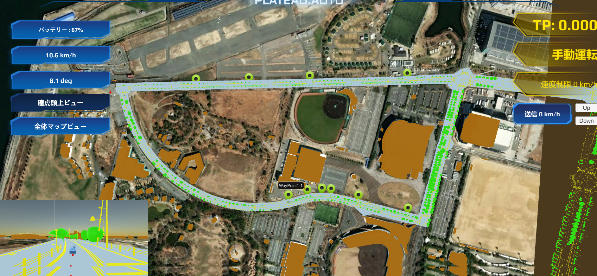
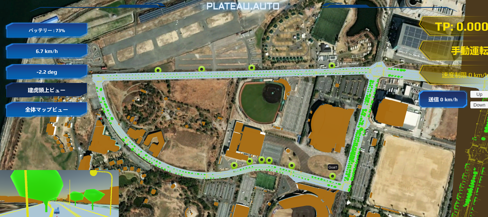

ウェイポイント機能について
- 本システムでは、ROSからUnityへウェイポイントを送ることで車両の目的地を設定しています。
- ウェイポイント機能は、実際の車両のROSへメッセージを送っています。サンプルデータ受信の場合には動作しません。
ウェイポイントの設定

- ウェイポイント設定は
LineMarker.csで行っています。 - 目標座標を、お使いのROSシステムに合った形で設定してください。
void Start()
{
WayPointList = new List<OnlineMapsMarker3D>();
map = OnlineMaps.instance;
marker1 = OnlineMapsMarker3DManager.CreateItem(135.394764, 34.664135, targetObject);
marker1.scale = markerSize;
marker1.altitude = 1f;
WayPointList.Add(marker1);
WaypointMarker1 = OnlineMapsMarkerManager.CreateItem(135.394764, 34.664135, "WayPoint1-1");
WaypointMarker1.OnClick += OnWaypoint1Click;
marker2 = OnlineMapsMarker3DManager.CreateItem(135.395246, 34.664275, targetObject);
marker2.scale = markerSize;
marker2.altitude = 1.5f;
WayPointList.Add(marker2);
WaypointMarker2 = OnlineMapsMarkerManager.CreateItem(135.395246, 34.664275, "WayPoint1-2");
WaypointMarker2.OnClick += OnWaypoint2Click;
marker3 = OnlineMapsMarker3DManager.CreateItem(135.395629, 34.664334, targetObject);
marker3.scale = markerSize;
marker3.altitude = 2.5f;
WayPointList.Add(marker3);
WaypointMarker3 = OnlineMapsMarkerManager.CreateItem(135.395629, 34.664334, "WayPoint1-3");
WaypointMarker3.OnClick += OnWaypoint3Click;
marker4 = OnlineMapsMarker3DManager.CreateItem(135.395871, 34.664332, targetObject);
marker4.scale = markerSize;
marker4.altitude = 2.5f;
WayPointList.Add(marker4);
WaypointMarker4 = OnlineMapsMarkerManager.CreateItem(135.395871, 34.664332, "WayPoint1-4");
WaypointMarker4.OnClick += OnWaypoint4Click;
marker5 = OnlineMapsMarker3DManager.CreateItem(135.396600, 34.664237, targetObject);
marker5.scale = markerSize;
marker5.altitude = 3f;
WayPointList.Add(marker5);
WaypointMarker5 = OnlineMapsMarkerManager.CreateItem(135.396600, 34.664237, "WayPoint1-5");
WaypointMarker5.OnClick += OnWaypoint5Click;
marker6 = OnlineMapsMarker3DManager.CreateItem(135.397924, 34.664031, targetObject);
marker6.scale = markerSize;
marker6.altitude = 3f;
WayPointList.Add(marker6);
GoalMarker1 = OnlineMapsMarkerManager.CreateItem(135.397924, 34.664031, "Goal1");
GoalMarker1.OnClick += OnGoal1Click;
ウェイポイントの送信

- 設定したウェイポイントをクリックすると、ROS側へ目的座標を送信します。
- ウェイポイント送信は
LineMarker.csで行っています。 - 目標座標は、お使いのROSシステムに合った形で設定をしてください。
private void OnWaypoint1Click(OnlineMapsMarkerBase marker) {
mqttManager.SendInitPose(-320.689f, 231.272f, 0.0f, 0.0f, 0.0f, -0.999f, 0.008f);
}
private void OnWaypoint2Click(OnlineMapsMarkerBase marker) {
mqttManager.SendInitPose(-369.413f, 230.417f, 0.0f, 0.0f, 0.0f, -0.999f, 0.007f);
}
private void OnWaypoint3Click(OnlineMapsMarkerBase marker) {
mqttManager.SendInitPose(-400.148f, 232.606f, 0.0f, 0.0f, 0.0f, 0.997f, 0.075f);
}
private void OnWaypoint4Click(OnlineMapsMarkerBase marker) {
mqttManager.SendInitPose(-400.148f, 232.606f, 0.0f, 0.0f, 0.0f, 0.997f, 0.075f);
}
private void OnWaypoint5Click(OnlineMapsMarkerBase marker) {
mqttManager.SendInitPose(-400.148f, 232.606f, 0.0f, 0.0f, 0.0f, 0.997f, 0.075f);
}
private void OnGoal1Click(OnlineMapsMarkerBase marker) {
mqttManager.SendGoalPose(-484.418f, 266.882f, 0.0f, 0.0f, 0.0f, 0.973f, 0.228f);
}